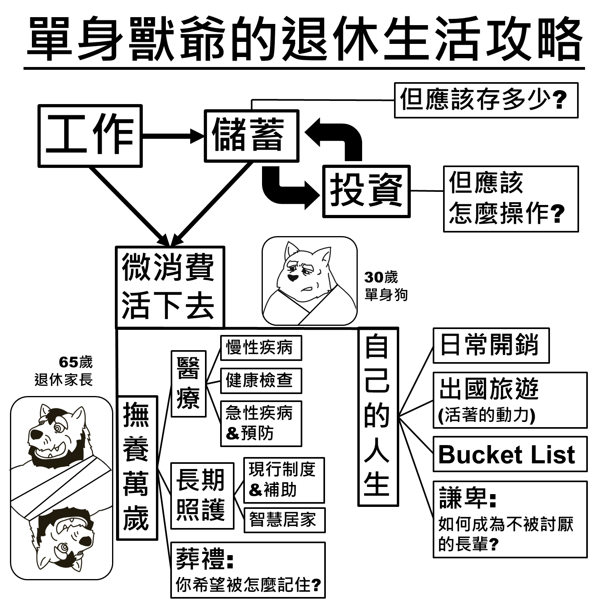

單身獸爺的退休生活攻略
醫療、長照與存在的意義
我有一個六十幾歲的爸爸和六十幾歲的獸設
為了 順利把我爸養老 & 成功帶入我的獸設
我打開了老年世界的大門
雖然各種莫名其妙的生理機能衰退會讓人看了血壓飆升
醫院和長照機構的費用也高得嚇人
還是要了解一下才知道未來怎麼規劃
醫療
身體是遲早會崩潰的：慢性病是遲早會得的，所以要定期健檢；自費醫療是遲早會用的，所以該知道要多少錢；急症是遲早會碰到的，知道怎麼緊急處理才不會自己嚇自己。
長照
長期照護等級怎麼判定、有哪些機構與輔助服務可以選、政府補助與自費費用大概是多少，一次整理給你。
存在的意義
正確的死亡不存在，但可以試著讓自己活得開心。
這個網站的起點
不工作的前提是已經存到這一輩子會用到的錢，但這筆錢是多少?
為了緩解我的焦慮，我把未來絕對會面對的支出: 日常開銷、醫療、長期照護(我的和父母的)，可能會遇到的情況與應對經費都列了出來。
看過許多資料後也知道自己有很多選擇:
養老不一定要去住一個月五萬的安養之家；如果生活可自理也可以去日照中心和其他社區居民一起玩。
因此想把這些資訊分享出去，幫助更多人找到適合自己的退休生活。

不想工作計畫